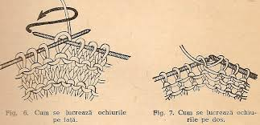
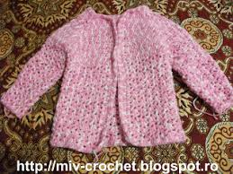
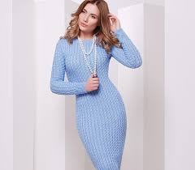

TRICOTAREA
Există multe sute de cusături diferite de tricotat folosite de tricotatele de mână. O bucată de tricotat începe cu procesul de turnare , care presupune crearea inițială a cusăturilor pe ac. Diferite metode de turnare sunt utilizate pentru efecte diferite: una poate fi suficient de întinsă pentru dantelă, în timp ce alta oferă o tăiere decorativă.Plicurile provizorii sunt utilizate atunci când tricotarea va continua în ambele direcții de la turnare. Există diverse metode folosite pentru a fi turnate, cum ar fi „metoda degetului mare” (cunoscută și sub numele de „slingshot” sau „turn-on” cu coadă lungă), unde cusăturile sunt create de o serie de bucle care, atunci când sunt tricotate, dați o muchie foarte liberă ideală pentru „ridicarea cusăturilor” și tricotarea unei chenare; „metoda dublă a acului” (cunoscută și sub denumirea de „tricotat” sau „turnat pe cablu”), prin care fiecare buclă așezată pe ac este apoi „tricotată”, care produce o muchie mai fermă ideală ca atare.La tricotarea manuală a anumitor articole de îmbrăcăminte, în special la cele mai mari, cum ar fi puloverele , îmbrăcămintea finală se va confecționa din mai multe piese tricotate, cu secțiuni individuale ale îmbrăcămintei tricotate separat și apoi cusute împreună .
Știați că...
Există, de asemenea, diferite moduri de a insera acul în cusătură. Tricotarea prin fața unei cusături se numește tricotare occidentală. Trecerea prin spatele unei cusături se numește tricotarea estică. O a treia metodă, numită combinație de tricotat , trece prin partea anterioară a unei cusături de tricotat și prin partea din spate a unei cusături purl.
Cusutul și brodatul tradițional
Broderia este o modalitate tehnico-decorativă de împodobire a ţesăturilor cu acul şi aţa. Tradiţiile ei sunt de mare vechime în Moldova.Broderia se realizează cu acul, deci este un procedeu tehnico-decorativ de înfrumuseţare a ţesăturilor, a pieselor vestimentare din ţesătură, piele.Multe din acestea se înfrumuseţau prin broderie: Cămaşele femeieşti şi cele bărbăteşti, prosoapele de nuntă.
Croșetarea
Crosetarea, cunoscuta din timpuri straveci, s-a dezvoltat pe parcursul secolilor, devinind în zilile noastre una dincele mai îndragite hobi a femeilor ce se ocupa cu lucrumanual..Arta de a croşeta oferă posibilitatea de a utiliza o gamă bogată de îmbinări de laţuri din firul de aţă şi procedee tehnice, care oferă ca rezultat o mare varietate de noi modele a pieselor croşetate...
Tricotarea
O origine a acestei indeletniciri nu este cunoscuta cu certitudine ,dar se crede ca tricotatul a aparut chiar in perioada dinainte de Hristos .Tricotatul probabil a fost adus din Orientul Mijlociu catre Europa prin Spania, de catre mauri.Primele obiecte de imbracaminte tricotate se pare ca au fost ciorapii.